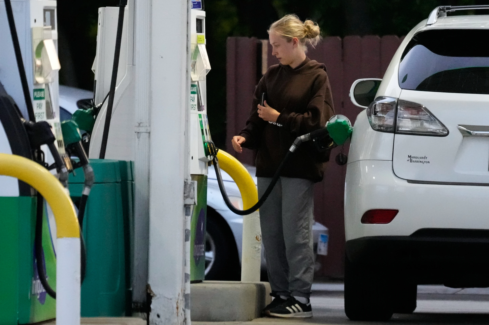

Monday, June 29, 2026
LIVE 7 days ago
President Donald Trump signed an agreement with Iran on Wednesday that calls for Tehran to dilute its stockpile of highly enriched uranium and waives U.S.-backed sanctions on the country, immediately allowing Iran to sell its oil freely in a major concession from Washington, according to details released by both countries.


NEW YORK — The average U.S. price for a gallon of gas slipped below $4 Thursday, its lowest level since the first full month of the war with Iran, offering a little comfort to customers pinched by surging prices.
The tentative U.S.-Iran peace deal and restart of oil shipments through the Strait of Hormuz are helping to force energy costs down, but the cost of gas is still a lot higher than when the war started on Feb. 28.
A gallon of standard gas was $3.999 Thursday, according to motor club AAA. The costs were that low for the first time since late March. The decline also coincides with generally falling crude oil prices and markets have been showing confidence in recent weeks about the chances of a peace deal.
Prices have fallen, but American drivers are still shelling out roughly $1 more per gallon, in total, than they were before the conflict and petrol is 25% more expensive than it was this time last year. This has led many families to tighten their belts and reconsider how they wish to spend their money.
Gas costs are more expensive “Research has demonstrated that consumers change their driving behavior and overall expenditures in response to short-term volatility in the price of gas, with some reducing expenditures for basic needs like food when gas prices increase,” said Dylan Brewer, an assistant professor in Georgia Tech’s School of Economics.
If costs continue to decline in the coming weeks, more people may be able to ‘loosen their belts a little bit,’ he said. Businesses that use petrol and diesel to move their goods will gain too, but Brewer added it could take a few months to trickle through the supply chain.
The battle has also seen prices rise for more than just gas. Global supply chain interruptions are making groceries, plane tickets and even condoms and shoes more. Even if oil and other essential commodities such as fertilizer begin flowing again from the Middle East, the high costs will likely last long after the combat is over, analysts warn.
According to Pat Penfield, a professor of supply chain practice at Syracuse University, “Product prices across the United States are likely to continue to rise throughout the remainder of 2026,” in a statement Thursday.
“The war’s impact on inventories and supply chains will ripple through to higher food prices by fall,” Penfield said, stressing the increased costs farmers will bear for fertilizer and other supplies this spring. Meanwhile, at the gas pump, restricted U.S. refinery capacity “remains a significant bottleneck” to pushing prices down further, he said.
U.S. inflation is already at a three-year high, driven by high fuel expenses. And many consumers are still spending well over $4 a gallon to fill their tanks.
That price is an average for the nation. Prices vary from state to state based on things like proximity to supply and tax rates. The average price for a gallon of regular petrol in California was around $5.64 on Thursday, AAA said. Hawaii was next most expensive at $5.57. Prices in Indiana and Texas were roughly $3.40 and $3.49 a gallon, respectively.
Fuel prices received a recent reprieve as costs for crude oil, the major ingredient in gasoline, fell.
Brent crude, the worldwide benchmark, fell below $80 a barrel Thursday. And U.S. benchmark crude fell below $76 a barrel. That’s still a little bit above the around $70 price tag before the war, but well below the $100-plus price from only a few weeks ago.
Why Oil Prices Are Falling Prices dropped overnight Wednesday into Thursday after President Donald Trump signed the tentative agreement with Iran. It requires Tehran to cut its stockpile of highly enriched uranium and, in a big concession from Washington, lifts U.S.-backed sanctions on the country, letting Iran sell its oil freely right away.
Since the memorandum of agreement was signed on Wednesday, major ship owners have also started pushing vessels through the Strait of Hormuz, according to maritime data from Lloyd’s List Intelligence, although some indicated that more limited side routes were open. The U.S. Navy also has relaxed its own blockade, allowing some movement to and from Iranian ports, U.S. Vice President JD Vance announced Thursday.
But it could be weeks or months before traffic returns to pre-war levels. The strait carried one fifth of the world's crude oil before the war. If they cut back output Gulf oil companies will need time to get the oil flowing again.
Some ship commanders could wait and see if the passage is safe. The U.S.-Iran accord calls for a permanent pause to hostilities and begins a 60-day period to negotiate a final deal on Iran’s nuclear program, however Trump left the door open for renewed attacks.
And refineries normally pay for crude oil a month or more in advance, so even when oil prices fall, they won’t be running cheaper products right away. Energy shocks have been felt more strongly in locations that rely more heavily on imports from the Middle East, especially countries throughout Asia and Africa.